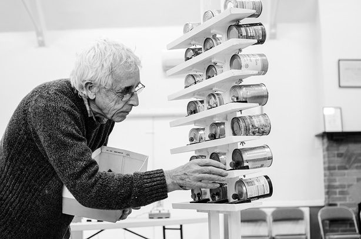

In 2015, after two full seasons of monthly events in our village hall, we delivered a mere three events throughout the year. They were events we are very proud (!) to put our name to but our regular monthly events were put on hold; due to the terminal illness of Sam’s father.
This year we have been taking stock and have decided that 2017 will see the relaunching of If Wet as an event; it may even crop up in our village hall home again at some point. The main focus of If Wet during this next phase will be to provide our distinctive strand of programming as part of other festivals. We have done this successfully in the past for the following events / establishments:
- Flatpack Festival – preview
- Southbank Centre – preview
- Supersonic Festival – documentation
- Worcester Music Festival – documentation
- Maker Faire – documentation
- Three Choirs Festival – documentation
- 


We have some festivals in mind and we will be getting in touch with them soon. We also welcome your input! If you have ideas for possible themes / host festivals / interesting artists etc…we are keen to know. Please send us your thoughts to: hello@ifwet.org.uk
We look forward to seeing you at an If Wet in 2017!